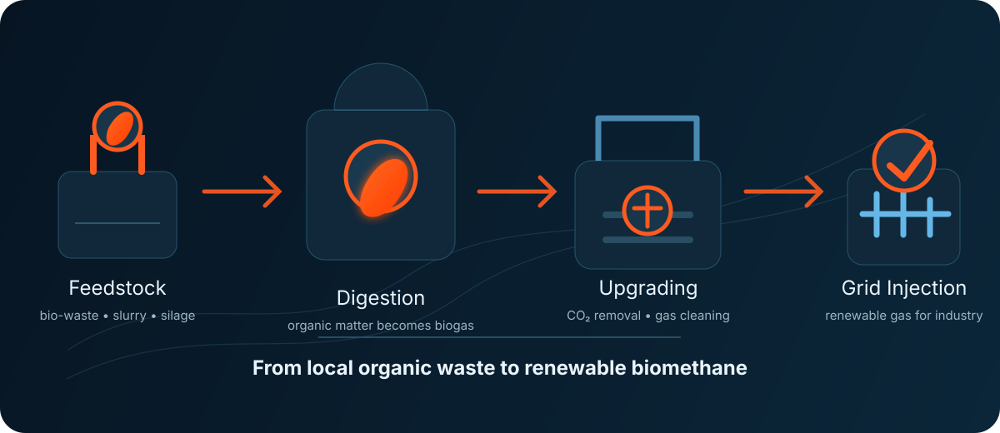

0 Nm³/htarget biomethane output
Biomethane infrastructure • Poland
Building the next generation of renewable gas.
ZK Nextgen Power develops scalable biomethane projects designed for gas grid injection, organic waste valorisation and long-term energy resilience.
Current development focus
Polish biomethane plant concept
A development-stage platform focused on feedstock flexibility, robust infrastructure and future-ready renewable gas production.
Grid injection ready
Circular feedstock streams
Scalable industrial concept
Polandstrategic development market
Circularvalue from organic streams
Gridrenewable gas infrastructure
Company focus
We develop biomethane infrastructure for Poland’s energy transition.
Our work combines renewable gas production, waste-to-value logic and industrial project development. The goal is to prepare bankable biomethane assets with clear technical structure, feedstock logic and future grid integration.
The current development focus is a modern biomethane plant concept in Poland, built around a scalable industrial layout and a flexible feedstock strategy.

Industrial biomethane plant concept for renewable gas production.
Renewable gas
Biomethane can be injected into gas infrastructure and used by households, industry or transport.
Real assets
The project is built around tangible infrastructure, long-life technology and operational value creation.
Circular economy
Organic streams are transformed into renewable gas and digestate instead of remaining low-value waste.
Energy security
Local renewable gas production can strengthen regional energy independence and supply diversification.
How it works
From organic feedstock to biomethane.
Biomethane is produced by treating organic materials through anaerobic digestion, cleaning the resulting biogas and upgrading it to grid-quality renewable gas.

Organic input streams
Typical inputs can include biodegradable waste, manure or slurry, sewage sludge and selected agricultural residues. The final mix depends on contracts, logistics and permitting.
Anaerobic digestion
In sealed digesters, microorganisms break down organic matter without oxygen. This produces raw biogas and digestate.
Gas cleaning and upgrading
Raw biogas is cleaned and upgraded by removing CO₂ and impurities, creating biomethane with a quality suitable for further use.
Renewable gas infrastructure
Biomethane can support industry, heating, transport and energy security through existing gas infrastructure, depending on final connection and regulatory conditions.
Why it matters
Biomethane connects decarbonisation with practical infrastructure.
Unlike many renewable energy assets, biomethane is storable, dispatchable and compatible with gas use cases. It can reduce waste, produce renewable gas and support a more resilient energy system.
Lower-emission gas alternative
Local waste-to-value model
Infrastructure-style development profile
Interactive estimate
Annual production model
Annual volume16.0m Nm³
Energy equivalent169.6 GWh
Indicative model only. Final values depend on feedstock, technology, methane content, grid connection and operating assumptions.
Development market
Poland offers a strong platform for renewable gas development.
The company’s focus is on preparing biomethane projects in Poland with attention to location, grid access, feedstock sourcing and long-term commercial structure.
Site and infrastructure logic
Identify locations with practical access to feedstock, logistics and gas infrastructure.
Technical preparation
Develop engineering, permitting, technology concept and connection requirements.
Commercial structure
Prepare feedstock, offtake, financing and partnership structure for bankability.
Leadership team
Focused team behind the project.
The team combines project development, commercial preparation and technical execution focus.

Jan Kvapil
CEO
Responsible for project development, business strategy and partner communication.

Petr Zelenka
CTO
Responsible for technical concept, engineering coordination and technology development support.
Contact
Let’s discuss biomethane development in Poland.
For investor, development, technology or strategic partnership inquiries, contact Jan Kvapil directly.
Email
kvapil.develop@gmail.com